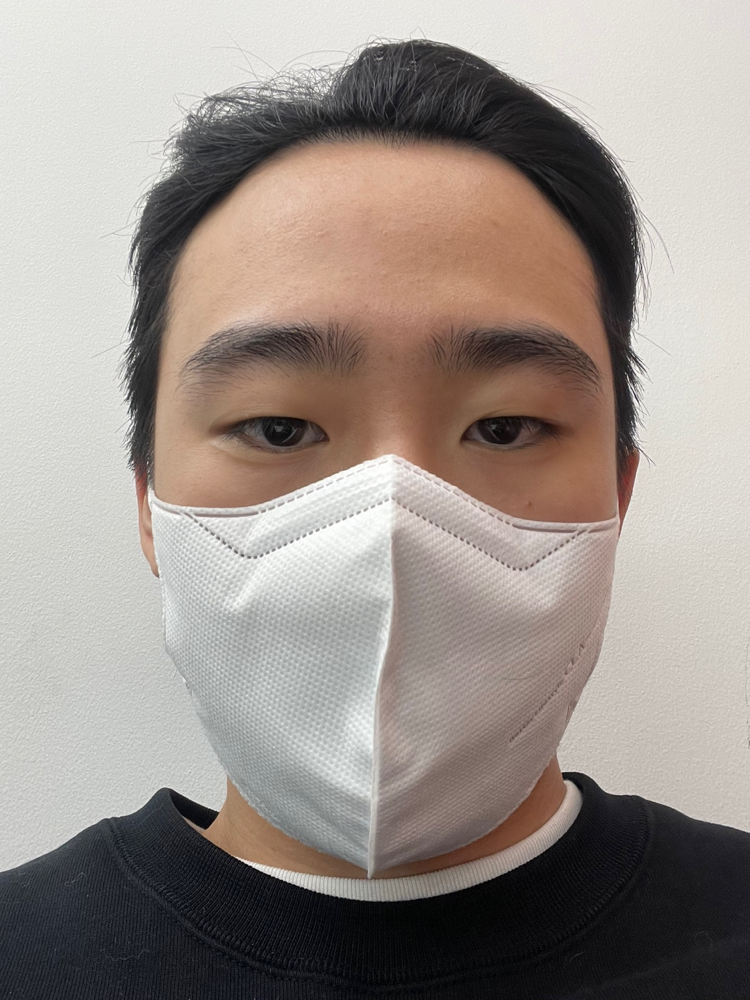

- 이해성
- 조민규
- 박대현
이해성 이야기
sex with headol
해성이는 목욕탕에 들어가서 자신의 고추를 보더니 그건 마치 개불과 해초 같았다고 했다

해당 매체는 "이강인은 지난 1년간 파울루 벤투 감독이 거의 포함하지 않았지만, 막판 한국 명단에 이름을 올렸다.
그러나 월드컵이 진행되면서 이강인은 두각을 나타내기 시작했다"라고 월드컵에서 나온 이강인의 활약을 칭찬했다.
또 이강인이 우루과이·가나·브라질전에서 특히 돋보였다고 평가했다.
이강인은 2025년 6월 말까지 마요르카와 계약이 되어 있다.
언론 보도에 의하면 마요르카 구단에서는 이강인이 팀에서 중요한 한 부분을 맡고 있고, 특히나 마요르카섬 지역에서 편안함을 느끼기 때문에 당장 겨울에 떠날 일은 없다고 보고 있다고 한다.
하지만 여러 외국 팀들의 관심을 불러일으켰다는 사실은 인정했다.
이강인은 바이아웃이 설정되어있다.
1700만유로(233억원)만 내면 어떤 팀이든 이강인을 영입할 수 있다.